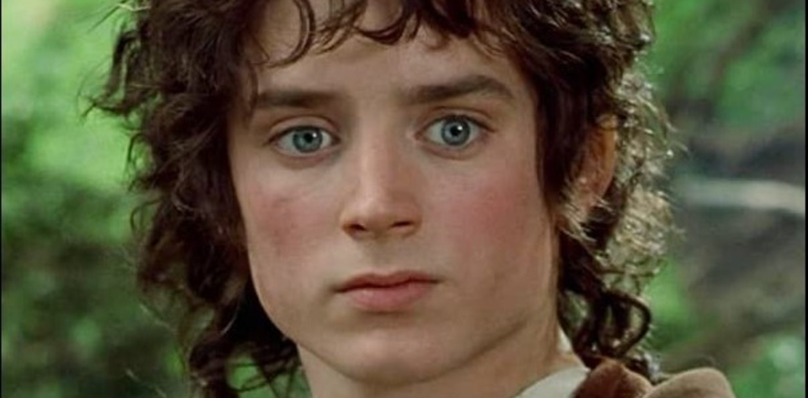
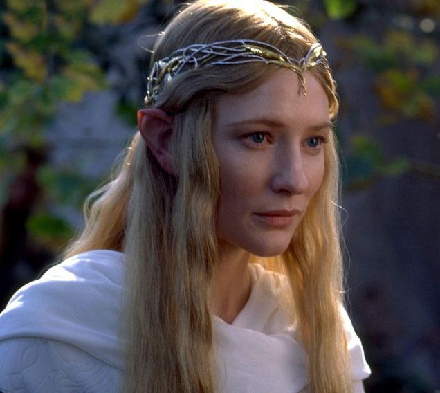

El Señor de los Anillos: La Comunidad del Anillo
Una epica aventura comienza

Sinopsis:
En la Tierra Media, el hobbit Frodo Bolsón hereda un anillo mágico de su tío Bilbo. Sin saberlo, este anillo es el Único Anillo creado por el Señor Oscuro Sauron para dominar toda la Tierra Media. Frodo, junto con una comunidad de valientes compañeros, emprende un peligroso viaje para destruir el Anillo en los fuegos del Monte del Destino, el único lugar donde puede ser deshecho.
Aventuras épicas, personajes memorables y un mundo de fantasía:
- Sigue a Frodo y sus amigos mientras atraviesan peligrosos terrenos, se enfrentan a temibles criaturas y luchan contra las fuerzas del mal.
- Conoce a personajes icónicos como Gandalf el mago, Aragorn el heredero al trono de Gondor, Legolas el elfo y Gimli el enano.
- Sumérgete en un mundo de fantasía lleno de magia, criaturas míticas y lugares impresionantes.
Personajes:
| Personaje | Actor | Imagen |
|---|---|---|
| Gandalf | Ian McKellen |  |
| Frodo Bolsón | Elijah Wood |  |
| Galadriel | Cate Blanchett |  |
El Señor de los Anillos: La Comunidad del Anillo es una película clásica que ha cautivado a audiencias de todo el mundo.
Ir a la pelicula